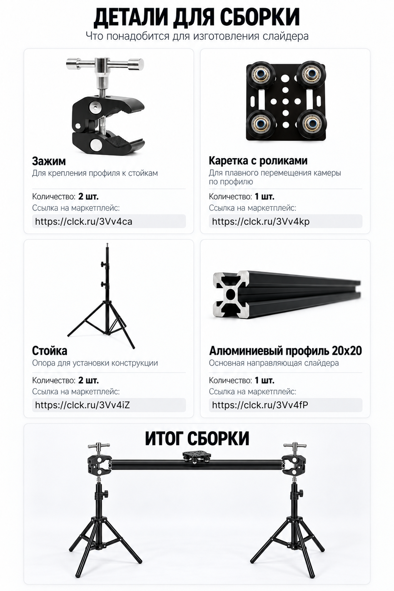

Зажим
Для крепления профиля к стойкам
Ссылка на маркетплейсclck.ru/3Vv4caВсё, что понадобится для изготовления слайдера для камеры.
Скачать PDF
Перед покупкой проверьте совместимость креплений, каретки и профиля у продавца.
Пять последовательных шагов.
Проверьте комплект: два зажима, две стойки, каретка и профиль. Перед сборкой убедитесь, что ролики каретки подходят к пазам выбранного профиля.
Наденьте каретку на профиль с открытого торца. Проверьте ход по всей длине: ролики должны двигаться свободно, без заеданий и заметного люфта. При необходимости отрегулируйте их по инструкции к каретке.
Полностью раскройте ножки стоек и поставьте их на ровную поверхность. Выставьте одинаковую высоту и закрепите зажимы на совместимых креплениях стоек.
Зафиксируйте профиль в зажимах по краям. Проверьте горизонтальность и затяжку всех соединений. Удерживая каретку, убедитесь, что конструкция не качается.
Сначала проверьте движение без камеры. Затем закрепите камеру через подходящую площадку или штативную головку. Проверьте устойчивость с нагрузкой и ведите каретку рукой, не допуская схода с торцов.
Задайте вопрос, расскажите о результате или узнайте об аренде слайдера.